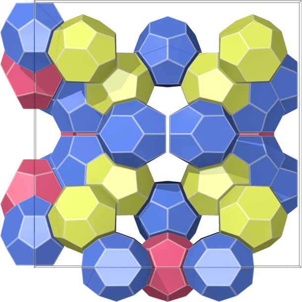
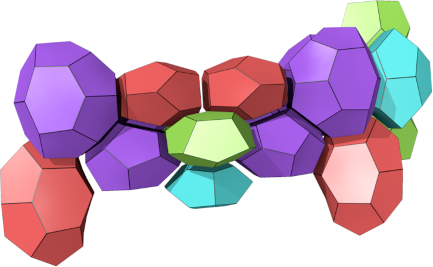
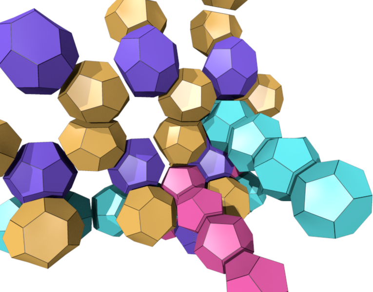
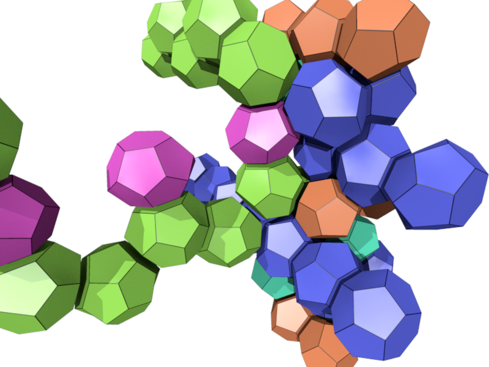

Space fullerenes
A space fullerene is a tiling of Euclidean space by fullerenes. Such tilings occur in Metallurgy, Crystallography, Soap froth, Optimization problems, etc. I enumerated small space fullerenes.




L M. Dutour Sikirić, O. Delgado-Friedrichs, M. Deza, Space fullerenes: computer search for new Frank-Kasper structures, Acta crystallographica A 66 (2010) 602--615.
L M. Dutour Sikirić, M. Deza, Space fullerenes: computer search for new Frank-Kasper structures II, Structural Chemistry 23-4 (2012) 1103--1114.